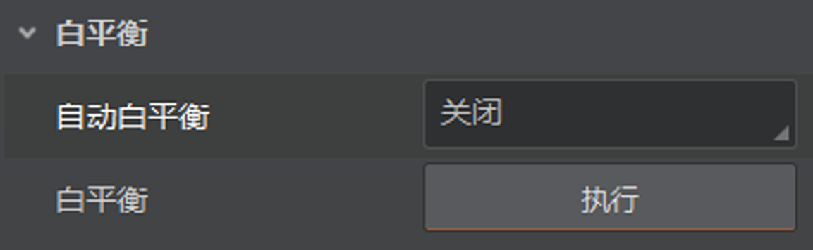
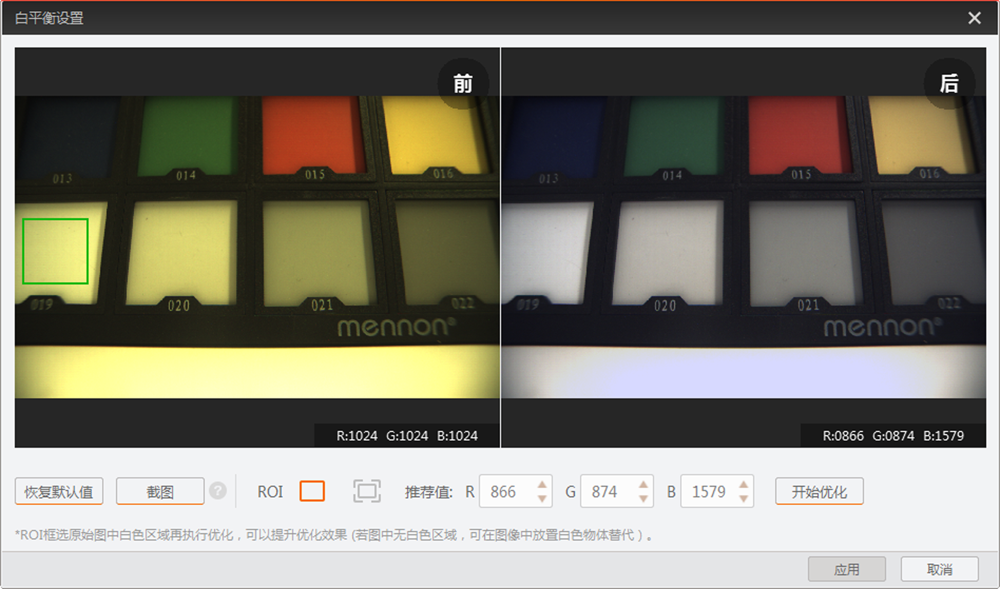

彩色相机bayer格式下，可通过客户端的白平衡设置工具进行快速优化。
已连接相机的像素格式为Bayer格式，且未开启伽马校正使能和颜色转换使能。
说明：
彩色是否支持颜色转换功能与相机型号以及固件程序有关，具体请咨询技术支持。
-
自动白平衡参数选择“关闭”，如下图所示。

图 1 关闭自动白平衡
说明：
若选择“一次”或“关闭”之外的选项，则无需进行以下操作。相机根据当前画面，自动进行白平衡调整。
-
点击白平衡的执行，进入白平衡设置窗口，如下图所示。
-
关闭提示窗口。
-
点击截图，截取未经过白平衡优化的图像。
窗口左侧显示白平衡优化前的图像，图像的R/G/B各分量数值均为1024。
- 可选操作：
点击在左侧图像进行ROI绘制。
-
对图像白平衡进行优化，共有三种方式。
-
直接点击开始优化。
-
手动修改R/G/B各分量的推荐值，点击开始优化。
-
先点击恢复默认值，再点击开始优化。
白平衡设置工具计算R/G/B各分量的推荐值，且窗口右侧显示白平衡优化后的图像以及此时图像的R/G/B各分量数值，如下图所示。

图 3 白平衡设置效果
-
点击应用将数值保存到相机参数中。